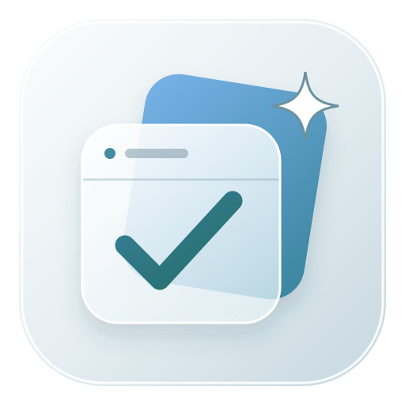

任务与看板
从待做、正在做，到完成和关闭。拖动就能调整状态与顺序，开始和结束时间清晰可见。

栖点PERCHPERSONAL WORKSPACE · PERCH
任务、项目、日历、禅道和 AI 助手，在一个安静清晰的工作台里自然衔接。
macOS · Windows · 本地优先

ONE PLACE TO WORK
栖点把分散在工具、网页和聊天里的工作信息收拢起来，让你随时知道下一步该做什么。
CAPABILITIES
从待做、正在做，到完成和关闭。拖动就能调整状态与顺序，开始和结束时间清晰可见。
同步与你有关的禅道项目、执行和 BUG，保留远端关联，也留出个人安排的自由。
月、周、日视图统一呈现任务，农历、节气、法定休假和调休一目了然。
创建不同 Agent，选择模型、技能和知识库，在同一个聊天空间里开始工作。
上传文档建立知识库，导入本机技能，让常用方法随时可被调用。
管理邮箱、MCP 和模型供应商，用统计图表看见工作负荷与推进趋势。
INSIDE PERCH


GET PERCH
免费、开源、本地优先。选择你的平台，开始使用栖点。